ঠিকাদার ব্যবস্থাপনা সফটওয়্যার
শ্রমিকের হাজিরা, মজুরি, ক্লায়েন্টের বিল, মালামাল ও ভাড়ার খরচ — সব এক জায়গায়। প্রতিটি টাকা কোন সাইটের কোন তলার কোন কাজে খরচ হলো, আর কোন কাজে কত লাভ হলো, এই নির্দেশিকায় তা ধাপে ধাপে দেখানো হলো।
১শুরু করার আগে
অ্যাডমিন আপনার জন্য একটি লগইন তৈরি করে দেবেন। লগইনের পর উপরের বাংলা / English বোতাম দিয়ে ভাষা বদলানো যায়। বাংলায় সব সংখ্যা বাংলা অঙ্কে ও লাখ-কোটি হিসাবে দেখায় (যেমন ৳ ১২,৫০,০০০)।
প্রথমবার ব্যবহারের আগে সেটআপ মেনু থেকে এই চারটি জিনিস একবার ঠিক করে নিন:
- প্রকল্প কাঠামো — ক্লায়েন্ট → সাইট → ভবন → তলা → ইউনিট। যত গভীর পর্যন্ত লিখবেন, খরচের হিসাবও তত সূক্ষ্ম হবে।
- কাজের ধরন — ইটের গাঁথুনি, প্লাস্টার, কলাম ঢালাই, সাটারিং ইত্যাদি তৈরি করা আছে; দরকার হলে নতুন যোগ করুন।
- শ্রমিক — নাম, ফোন, এনআইডি আর দক্ষতা স্তর (হেলপার, মিস্ত্রি, জুনিয়র, সিনিয়র, এক্সপার্ট)।
- মজুরি হার — প্রতিটি দক্ষতা স্তরের দৈনিক মজুরি, দক্ষতা ভাতা ও ওভারটাইমের ঘণ্টাপ্রতি হার। কোনো সাইটে আলাদা হার থাকলে সেই সাইটের জন্য আলাদা হার কার্ড দিন — সেটিই অগ্রাধিকার পাবে। হার বদলালে আগের হাজিরার হিসাব বদলায় না।
২দৈনিক হাজিরা ও ওভারটাইম
হাজিরা শুধু উপস্থিতি নয় — কে কোথায় কোন কাজে কতটুকু সময় দিল, সেটাও। এখান থেকেই প্রতিটি কাজের শ্রম-খরচ বের হয়।
মেনু: দৈনিক কাজ › দৈনিক হাজিরা। উপরে ডানদিকে তারিখ বেছে নিন, তারপর তিনটি ধাপ:
- স্থান — সাইট বাছাই করুন; চাইলে ভবন, তলা ও ইউনিট।
- কাজ — কাজের ধরনে চাপ দিন। নিচে পূর্ণ দিন / অর্ধ দিন / সিকি দিন বেছে নিন, আর ওভারটাইম হলে ওভারটাইম ঘণ্টা লিখুন।
- শ্রমিক — একসাথে অনেক শ্রমিক টিক দিন, তারপর হাজিরা দিন। একই দিনে কেউ দুই কাজে অর্ধেক অর্ধেক সময় দিলে আবার ধাপ ২ থেকে দ্বিতীয় কাজটি যোগ করুন।
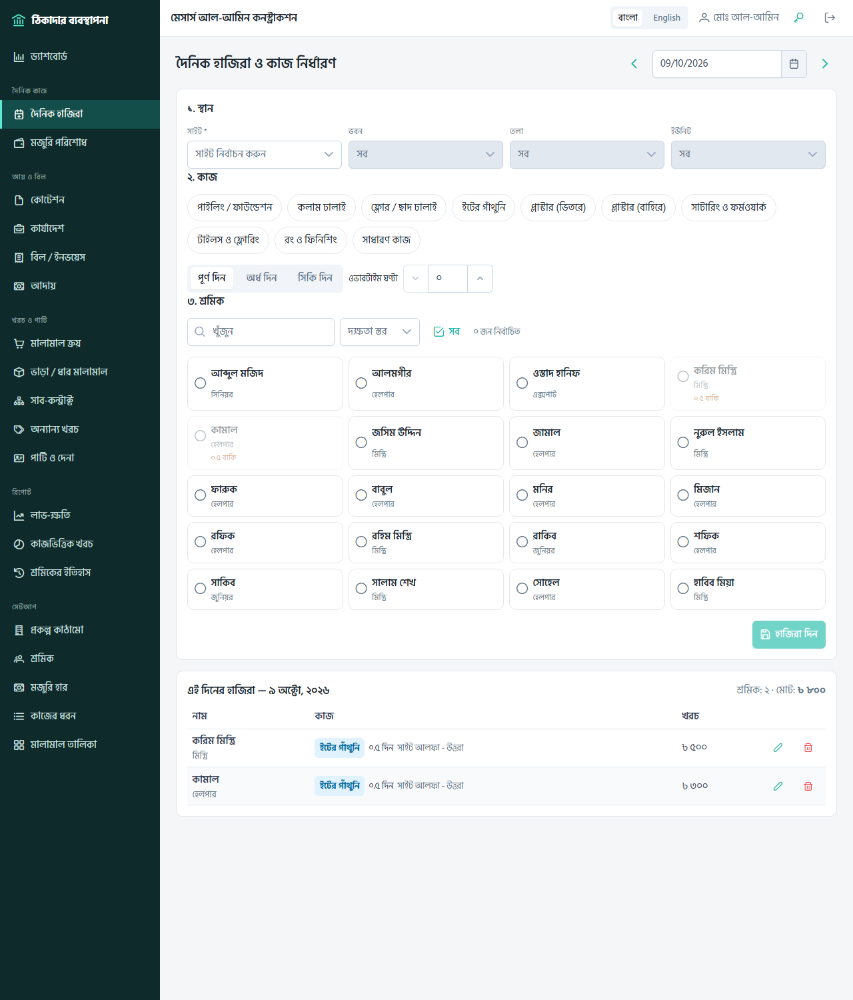
মজুরি কীভাবে হিসাব হয়
| সিনিয়র — পূর্ণ দিন (১ × ৳ ১,১০০) | ৳ ১,১০০ |
| দক্ষতা ভাতা (১ × ৳ ১০০) | ৳ ১০০ |
| ওভারটাইম ৩ ঘণ্টা × ৳ ১৪০ | ৳ ৪২০ |
| ঐ দিনের মজুরি | ৳ ১,৬২০ |
- ওভারটাইম নিজে হিসাব হয় না — ঘণ্টা আপনাকে হাতে লিখতে হবে।
- একজন শ্রমিকের এক দিনে মোট এক দিনের বেশি দেওয়া যাবে না; চেষ্টা করলে সতর্কবার্তা আসবে।
- মজুরি হার না থাকলে হাজিরা নেবে না — আগে মজুরি হার যোগ করুন।
- ভুল হলে দিনের তালিকা থেকে সম্পাদনা করুন। পুরনো হিসাব মুছে যায় না, সংশোধনী হিসেবে লেখা থাকে।
৩মজুরি বিল ও পরিশোধ
প্রতিটি শ্রমিক কত টাকা অর্জন করেছে, কত পেয়েছে আর কত বকেয়া — হাজিরা থেকে আপনা-আপনি হিসাব হয়।
মেনু: দৈনিক কাজ › মজুরি পরিশোধ। প্রতিটি সারিতে অর্জিত − পরিশোধিত = বকেয়া। সারির পরিশোধ যোগ চাপলে বকেয়া টাকা আগে থেকেই বসানো থাকে।
মজুরি
সাপ্তাহিক বা মাসিক মজুরি পরিশোধ। বকেয়া থেকে কমে।
অগ্রিম
কাজের আগে দেওয়া টাকা। বকেয়া থেকে কমে; বেশি দিলে বকেয়া ঋণাত্মক (কমলা রঙে) দেখায়।
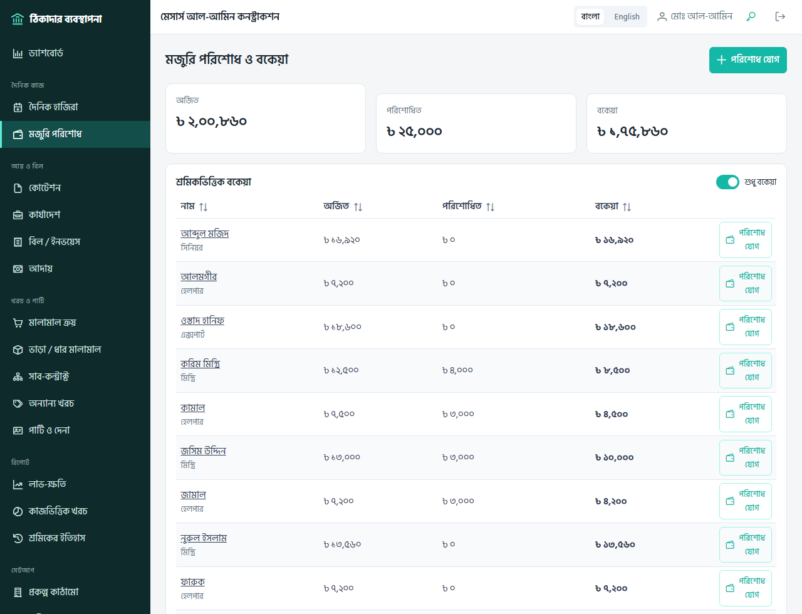
একজন শ্রমিকের মজুরি বিল (শ্রমিকের ইতিহাস)
মেনু: রিপোর্ট › শ্রমিকের ইতিহাস। শ্রমিক ও তারিখের সীমা বেছে দেখুন চাপুন। প্রতিদিন কোন সাইটের কোন তলায় কোন কাজ করেছে, কত দিন, কত ঘণ্টা OT আর কত টাকা — সব এক তালিকায়। উপরে এই সময়ের মোট, অর্জিত/পরিশোধিত ও বকেয়া। শ্রমিককে মজুরি দেওয়ার আগে এই পাতা দেখিয়ে হিসাব মিলিয়ে নিতে পারেন।
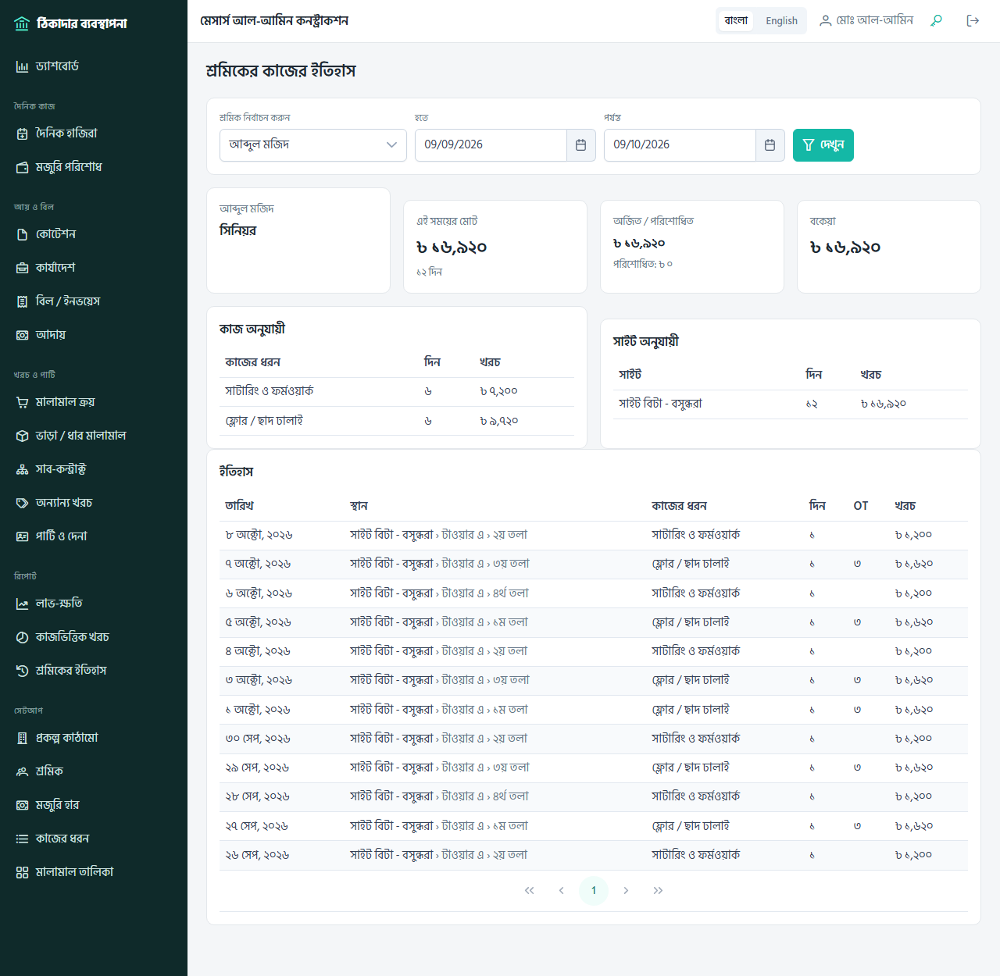
৪আয়: কোটেশন থেকে আদায়
ক্লায়েন্টের কাছ থেকে টাকা পাওয়ার পুরো পথ: দর দেওয়া, কাজ পাওয়া, ধাপে ধাপে বিল করা আর টাকা বুঝে নেওয়া।
- কোটেশন (আয় ও বিল › কোটেশন) — কাজের তালিকা (BOQ): বিবরণ, একক, পরিমাণ, দর; ছাড় ও শর্তাবলি। প্রিন্ট করে ক্লায়েন্টকে দিন, তারপর “পাঠানো হয়েছে” চিহ্নিত করুন। দর বদলাতে হলে নতুন সংস্করণ।
- কার্যাদেশ — ক্লায়েন্ট রাজি হলে কোটেশনের সারিতে সবুজ কার্যাদেশ তৈরি। সাইট, জামানত কর্তন (%) ও ক্লায়েন্টের রেফারেন্স নং দিন। কোটেশন ছাড়াও সরাসরি কার্যাদেশ তৈরি করা যায় — থোক চুক্তি হলে শুধু চুক্তি মূল্য লিখলেই চলবে।
- বিল পরিকল্পনা — কার্যাদেশের পাতায় মাইলস্টোন লিখুন (যেমন “ছাদ ঢালাই”), অথবা কিস্তি তৈরি দিয়ে সাপ্তাহিক / মাসিক সমান কিস্তি বানান। সময় হলে কিস্তির পাশে “বিল করার সময় হয়েছে” দেখাবে।
- বিল — বিল করুন বা নতুন বিল। আগে খসড়া রাখুন, ঠিক থাকলে জমা দিন। জমা দেওয়ার পর বিল আর বদলানো যায় না (টাকা না পেলে “সংশোধনের জন্য খুলুন” করা যায়)।
- আদায় — টাকা পেলে বিলের পাশে টাকা গ্রহণ: তারিখ, টাকা, মাধ্যম (নগদ / ব্যাংক / চেক / মোবাইল ব্যাংকিং) ও চেক নম্বর। বিল ছাড়া অগ্রিম টাকাও নেওয়া যায়।
তিন রকম বিল
| বিলের ধরন | কখন ব্যবহার করবেন |
|---|---|
| মাইলস্টোন / কিস্তি | পরিকল্পনার একটি কিস্তি বা ধাপের নির্দিষ্ট টাকা। |
| কাজের পরিমাপ (চলতি বিল) | এই বিলে কোন কাজ কতটুকু হয়েছে (যেমন ৩,৫০০ সিএফটি গাঁথুনি)। কার্যাদেশের দরে টাকা হিসাব হয়; আগে কত বিল হয়েছে ও কত বাকি তাও দেখায়। |
| অন্যান্য | অতিরিক্ত কাজ, জামানত ফেরতের বিল ইত্যাদি — নিজে লাইন লিখুন। |
| মোট বিল (মাসিক কিস্তি ২) | ৳ ৪,৬৮,৩৩৩ |
| জামানত কর্তন ৫% | − ৳ ২৩,৪১৬.৬৫ |
| নিট প্রাপ্য | ৳ ৪,৪৪,৯১৬.৩৫ |
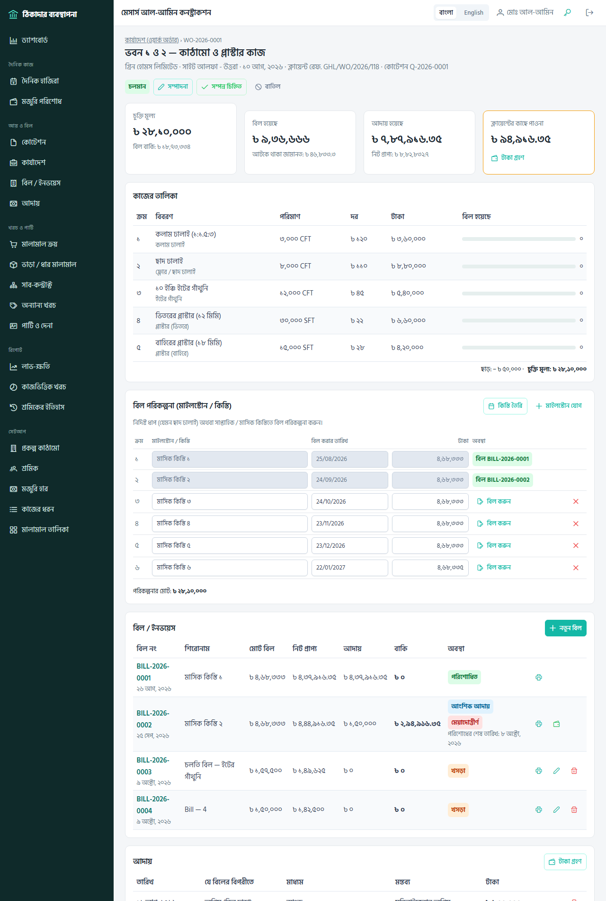
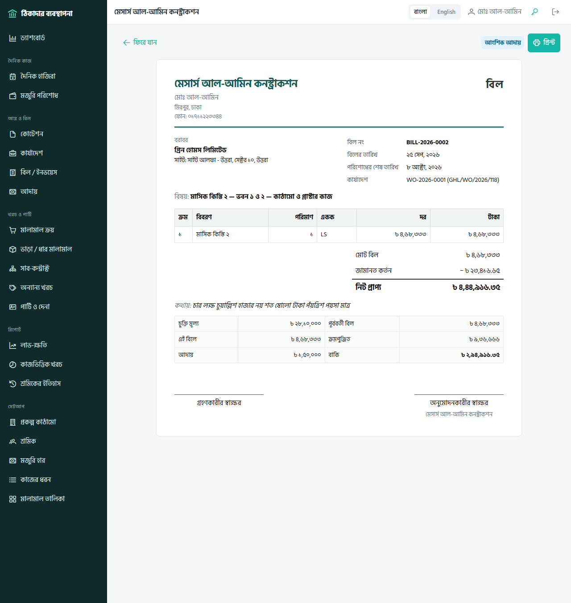
৫খরচ ও পার্টি
শ্রমিকের মজুরি ছাড়া বাকি সব খরচ এখানে। প্রতিটি খরচ কোন সাইট / তলায় আর কোন কাজে, তা লিখে দিলে লাভ-ক্ষতির হিসাব সঠিক হয়।
পার্টি ও দেনা
যাদের কাছ থেকে মালামাল কেনেন, শাটারিং ভাড়া নেন বা যাদের দিয়ে কাজ করান — সবাই পার্টি (সরবরাহকারী, সাব-কন্ট্রাক্টর, ভাড়া প্রদানকারী)। প্রতিটি পার্টির মোট দেনা − পরিশোধিত = বাকি দেনা। নামে চাপলে হিসাব বিবরণী খোলে — তারিখ অনুযায়ী প্রতিটি ক্রয়, ভাড়া, বিল ও পরিশোধ আর চলমান স্থিতি।
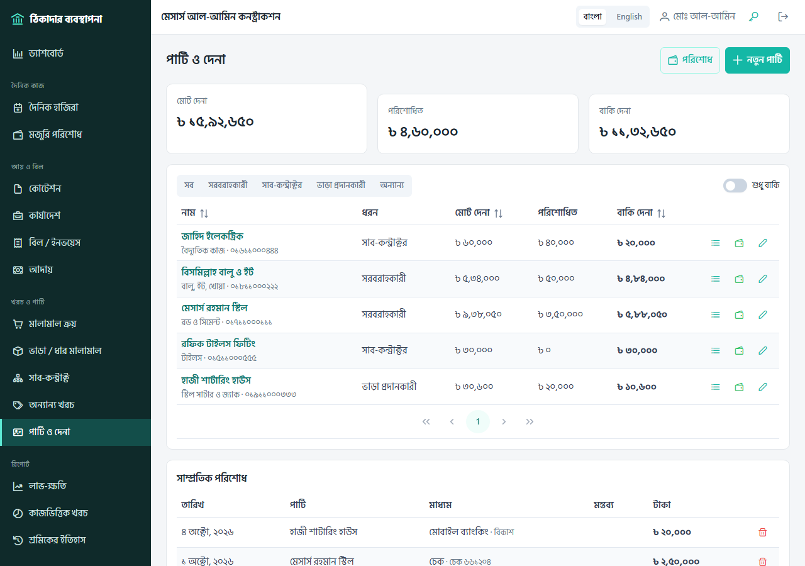
মালামাল ক্রয়
একটি চালানে কয়েকটি মালামাল (রড, সিমেন্ট…) — পরিমাণ × দর। পার্টি না দিলে “নগদ (বাজার থেকে)” ধরা হয়। পার্টির কাছ থেকে কিনে কিছু টাকা সাথে সাথে দিলে এখনই পরিশোধ ঘরে লিখুন; বাকিটা পার্টির দেনায় যোগ হবে।
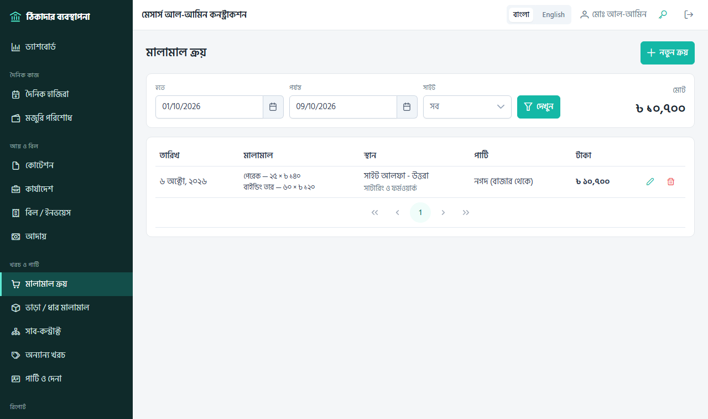
ভাড়া ও ধার করা মালামাল (স্টিল সাটার, জ্যাক, বাঁশ, পিন…)
মালামাল সাইটে এলে মালামাল আনা হয়েছে: কত পিস, প্রতিদিন প্রতি পিসের ভাড়া, আনার তারিখ। বিনা ভাড়ায় ধার নিলে ভাড়া ০ দিন — তবু কী কী ফেরত দিতে হবে, তার হিসাব থাকবে।
| মাস শেষে হিসাব: ৩০০ পিস × ৳ ৩ × ৩০ দিন | ৳ ২৭,০০০ |
| ১০০ পিস ফেরতের দিন পর্যন্ত: ৩০০ × ৳ ৩ × ৪ দিন | ৳ ৩,৬০০ |
| হিসাবকৃত ভাড়া | ৳ ৩০,৬০০ |
- ভাড়া হিসাব (ক্যালকুলেটর আইকন) — মাস শেষে বা পার্টি বিল দিলে, ঐ তারিখ পর্যন্ত ভাড়া খরচে যোগ হয়।
- ফেরত দিন — আংশিক ফেরতও চলে; ফেরতের দিন পর্যন্ত বাকি ভাড়া নিজে থেকেই হিসাব হয়। সব ফেরত গেলে অবস্থা “ফেরত দেওয়া হয়েছে”।
- চলমান ভাড়া — শেষ হিসাবের পর থেকে আজ পর্যন্ত জমা হওয়া ভাড়া, যা এখনও খরচে যোগ হয়নি।
- ভুল হলে শেষ এন্ট্রি বাতিল।
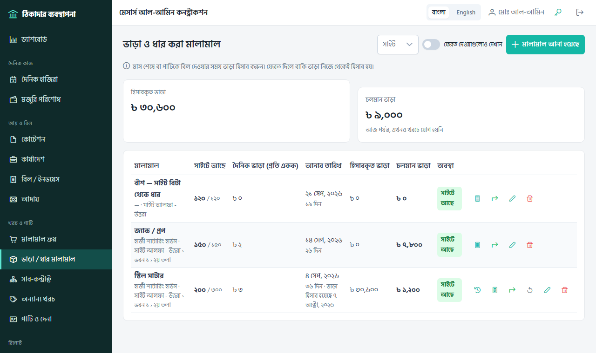
সাব-কন্ট্রাক্ট (তৃতীয় পক্ষের কাজ)
বৈদ্যুতিক কাজ, টাইলস ফিটিং ইত্যাদি অন্য কাউকে দিয়ে করালে: পার্টি, কাজের বিবরণ, স্থান, আর পরিমাণ × দর অথবা থোক টাকা। কাজ যত এগোবে, তাদের বিল কাজের বিল যোগ দিয়ে লিখুন — বিলের টাকা খরচ ও পার্টির দেনায় যায়। “বাকি” দেখায় চুক্তির আর কত টাকার বিল আসবে।
অন্যান্য খরচ
পরিবহন, জ্বালানি, খাবার/নাস্তা, বিদ্যুৎ/পানি, যন্ত্রপাতি, মেরামত, অফিস খরচ। নগদ হলে পার্টি খালি রাখুন; বাকিতে হলে পার্টি বেছে দিন।
৬রিপোর্ট ও লাভ-ক্ষতি
সব রিপোর্ট সরাসরি হাজিরা, বিল ও খরচ থেকে তৈরি হয় — আলাদা করে কিছু লিখতে হয় না। প্রতিটি রিপোর্ট প্রিন্ট করা যায়।
ড্যাশবোর্ড
লগইন করলেই প্রথম পাতা। আজকের খরচ ও কর্মরত শ্রমিক, গত ৩০ দিনের খরচ, মোট বকেয়া মজুরি; টাকার অবস্থা অংশে বিল ও আদায়, ক্লায়েন্টের কাছে পাওনা, মেয়াদোত্তীর্ণ বিল আর পার্টির দেনা; এবং খরচের খাত (শ্রম, মালামাল, ভাড়া, সাব-কন্ট্রাক্ট, অন্যান্য)। লাল দাগের ঘর মানে মেয়াদোত্তীর্ণ বিল আছে।
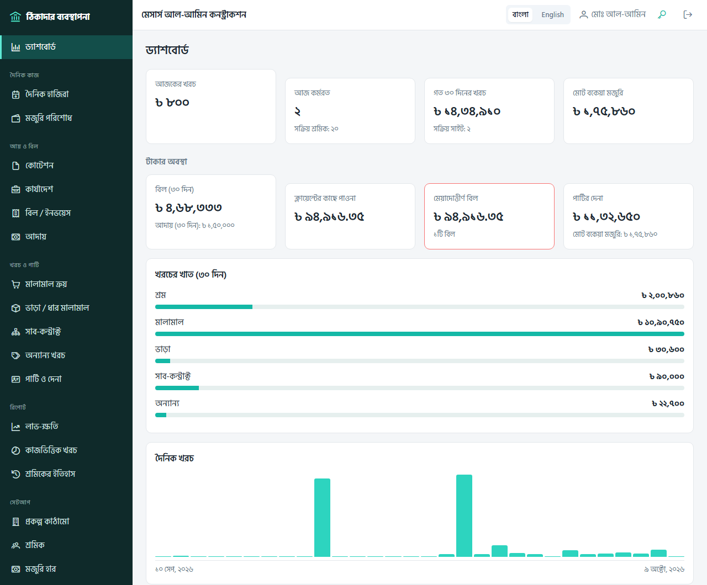
লাভ-ক্ষতি
মেনু: রিপোর্ট › লাভ-ক্ষতি। তারিখ খালি রাখলে শুরু থেকে আজ পর্যন্ত; একটি সাইট বাছাই করলে শুধু সেই সাইট।
- সাইটভিত্তিক — প্রতিটি সাইটের চুক্তি মূল্য, আয়, খাতভিত্তিক খরচ, লাভ আর লাভের হার (%)।
- কাজভিত্তিক — প্রতিটি কাজের ধরনে (যেমন ইটের গাঁথুনি) চুক্তি, আয়, খরচ ও লাভ। কিস্তি বিলের টাকা কোনো কাজে বাঁধা নেই বলে “নির্দিষ্ট কাজ ছাড়া” সারিতে আসে।
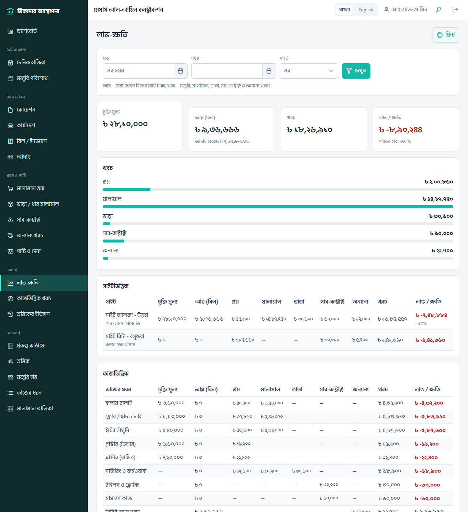
কাজভিত্তিক খরচ
মেনু: রিপোর্ট › কাজভিত্তিক খরচ। সময়, ক্লায়েন্ট, সাইট, ভবন ও তলা দিয়ে ছেঁকে দেখুন কোন কাজে কত দিন শ্রম, কত OT, কতজন শ্রমিক আর খাতভিত্তিক কত টাকা খরচ হলো। নিচে সাইট × কাজের তুলনামূলক টেবিল। কোনো কাজে বাঁধা নয় এমন খরচ (যেমন পরিবহন) “নির্দিষ্ট কাজ ছাড়া খরচ” হিসেবে আলাদা দেখায়।
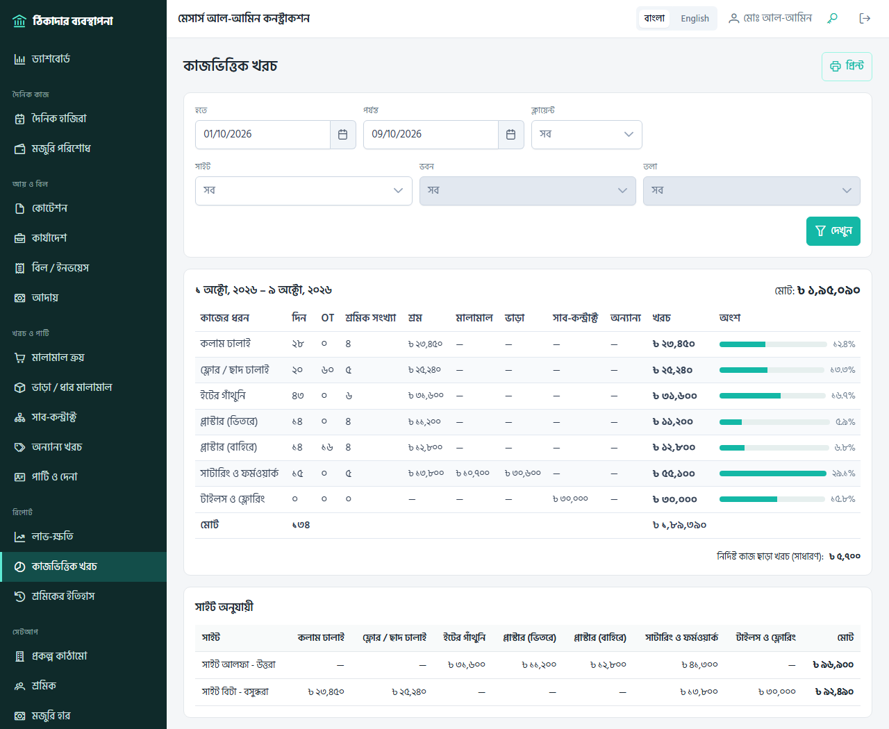
৭নিয়মিত কাজের তালিকা
| কখন | কী করবেন |
|---|---|
| প্রতিদিন | হাজিরা ও ওভারটাইম; সেদিনের ক্রয় ও অন্যান্য খরচ; ভাড়ার মালামাল এলে বা ফেরত গেলে লিখে রাখা। |
| প্রতি সপ্তাহ | মজুরি পরিশোধ (শ্রমিকের ইতিহাস দেখে মিলিয়ে); সাপ্তাহিক কিস্তি থাকলে বিল জমা। |
| মাস শেষে | ভাড়ার মালামালের ভাড়া হিসাব; চলতি / মাসিক বিল জমা; পার্টিকে পরিশোধ ও হিসাব বিবরণী মিলানো; লাভ-ক্ষতি দেখা। |
| টাকা পেলে | বিলের পাশে টাকা গ্রহণ — চেক / লেনদেন নম্বরসহ। |
প্রায়ই জিজ্ঞাসিত
- জমা দেওয়া বিলে ভুল হয়েছে? টাকা না পেয়ে থাকলে “সংশোধনের জন্য খুলুন”, ঠিক করে আবার জমা দিন। টাকা পাওয়ার পর বদলানো যায় না; প্রয়োজনে আদায়টি মুছে তারপর ঠিক করুন।
- অ্যাডমিন কী দেখতে পান? অ্যাডমিন আপনার ব্যবসার রিপোর্ট শুধু দেখতে পারেন, কিছু বদলাতে পারেন না।
- পুরনো হিসাব মুছে গেলে কী হয়? হাজিরা বা খরচ সম্পাদনা / মুছলে আগের হিসাব সংশোধনী এন্ট্রি হিসেবে থেকে যায়, তাই রিপোর্ট সবসময় মেলে।